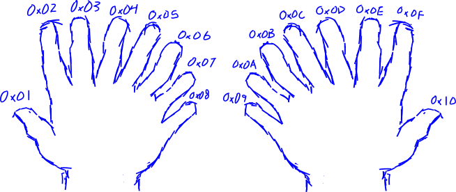
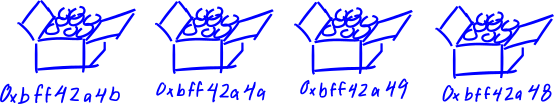
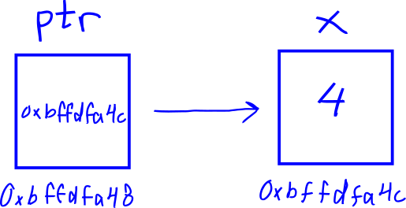

Part 2: Computer Organization Crash Course
These concepts are not limited to MIPS, but I think they are wholly important while learning MIPS assembly. Instructions act on data, but what are the types of data that we can interact with?
Data Representation
First is a bit - a bit is a single digit that can have the value of 1 or 0. Grouping together more bits means that more values can be represented.
If we have 3 bits (each with the possibility of representing 1, or 0), then 8 values can be represented because 2 x 2 x 2 = 23 = 8.
These binary values would be:
000 001 010 011 100 101 110 111
Then, deciding on what the groups of binary values represent is up to the context of the situation. Context refers to how the data is interpreted. Is the data representing ascii or is it a signed or unsigned integer value, or is it a floating point number?
It is important to note that the same binary value can represent multiple different things depending on the context.
For example, take the binary value 110
If the number is seen as unsigned (representing the range of numbers 0 through 23 - 1 because we have 3 bits), then the binary value 110 is interpreted as the decimal number 6, which is positive.
If the number is seen as signed (representing the range of numbers -(22) to 22 - 1), then the binary value 110 is interpreted as the decimal number -3, which is negative.
By convention, 8 bits make up a byte. Instructions that have a suffix character 'b' likely operate on a byte such as lb for load byte.
Moving on-- 2 bytes make up a half-word and 4 bytes make up a word. In MIPS, the corresponding instructions for loading these sized-values are lh and lw for load half-word and load word respectively.
| Number of bits: | 1 | 2 | 3 | 4 | 5 | 6 | 7 | 8 | 9 | 10 | 11 | 12 | 13 | 14 | 15 | 16 | 17 | 18 | 19 | 20 | 21 | 22 | 23 | 24 | 25 | 26 | 27 | 28 | 29 | 30 | 31 | 32 |
|---|---|---|---|---|---|---|---|---|---|---|---|---|---|---|---|---|---|---|---|---|---|---|---|---|---|---|---|---|---|---|---|---|
| 1 Byte | |= | = | = | = | = | = | = | =| | ||||||||||||||||||||||||
| 2 Bytes (half-word) | |= | = | = | = | = | = | = | = | = | = | = | = | = | = | = | =| | ||||||||||||||||
| 4 Bytes (word) | |= | = | = | = | = | = | = | = | = | = | = | = | = | = | = | = | = | = | = | = | = | = | = | = | = | = | = | = | = | = | = | =| |
lb - load byte
lh - load half-word
lw - load word
Hexadecimal (base 16)
Values can be converted from binary representation (base 2) to hexadecimal (base 16) and decimal (base 10) for greater ease of comprehending the values.
Hexadecimal or base 16 is a number system. Often, the numbers are represented with the prefix 0x, so a hex number looks like 0x{number}. Counting in hex begins similarly to decimal, (0x0, 0x1, 0x2, 0x3, 0x4, 0x5, 0x6, 0x7, 0x8, 0x9); however, because it is base 16 and not base 10, counting continues in single digits which are represented by letters A through F. So when you continue to count from 9, it will be 0xA, 0xB, 0xC, 0xD, 0xE, 0xF. The number after 0xF will have a carry-over and will be 0x10. In decimal, this number is 16.
To make better sense of this, we typically have five fingers on each hand (for a grand total of ten fingers), so we count up to 10 in decimal before we need to carry over onto a third hand. But if we had eight fingers on each hand (for a grand total of sixteen fingers), we would count up to 0x10 in hex.

Hex is useful in computers because one byte is represented by two hex digits.
In ascii, the hex value 0x41 represents the uppercase character A. You can verify this in the Unix / Linux command line with the command: man ascii
Endianness
MIPS can be set to operate on either little or big endianness depending on whether the BE bit in the Config register is set (1 for big-endian, 0 for little-endian).
Endianness describes the order in which bytes of data are loaded into registers and memory.
For example, if the letters A, B, C, and D are in an ordered list from left-to-right.
The big-end (most significant bit) would be A while the little-end (least significant bit) would be D.
Now say you write the list mentioned above onto a piece of paper.
In big-endian order you would write A, B, C, D. In little-endian order you would write D, C, B, A
Wikipedia has a really great illustration
Memory
Disregarding how memory is implemented in hardware, memory abstractly can be thought of as the location of running programs. Every byte of memory is assigned a memory address, which is also a sequence of 1's and 0's. For convenience, we will write 32-bit memory addresses in hex. In MIPS, a memory address is a 4-byte value such as 0x7fffffff.
Imagine a layout of a room where there are a bunch of boxes covering the floor. On the floor, there is an address associated to the position of each box. Inside of each box are eight light bulbs (eight bits), some of the lights are on whereas others are off. In this analogy, each box represents a byte that has a corresponding four byte memory address assigned to it.

It's not a perfect analogy, especially in regards to virtual memory and address translation but we won't think about that for now. You can read more about that here
Pointers
In the programming language C, pointers are variables whose value is a memory address. They are useful for operating on data outside of a function's local scope and generally for working more closely with memory.
Imagine every variable is a square that has an associated memory address.
The drawing below is to be observed with the following rules:
- The name of the variable is above the square
- The value of the variable is inside of the square
- The memory address is below the square

So in the drawing above, the variable named x has a value of 4 and a memory address of 0xbffdfa4c.
When we look at ptr, the value of the pointer contains the memory address of the variable x.
Multiple operations can be performed on the pointer. We can get the immediate value, we can get its own memory address, and we can dereference it. Dereferencing a pointer can be visualized by jumping to the variable a pointer is pointing to and grabbing the value where it lands.
The below C code demonstrates the different operations that can be performed with a pointer and show the relationship of a variable's value and memory address.
#include <stdio.h>
void main() {
int x = 4;
int *ptr = &x;
// addresses will likely be different when you compile on another computer
// just as in our visual above, we can see that the code will print
printf("%d\n", x); // 4 - value of x is 4
printf("%p\n", &x); // 0xbffdfa4c - address of x
printf("%p\n", ptr); // 0xbffdfa4c - value of ptr is the address of x, so should be the same as above
printf("%p\n", &ptr); // 0xbffdfa48 - address of ptr
printf("%d\n", *ptr); // 4 - value of x (ptr dereferenced)
}
Further Reading
1. Geeks for Geeks Computer Organization Tutorials
2. A Book on C